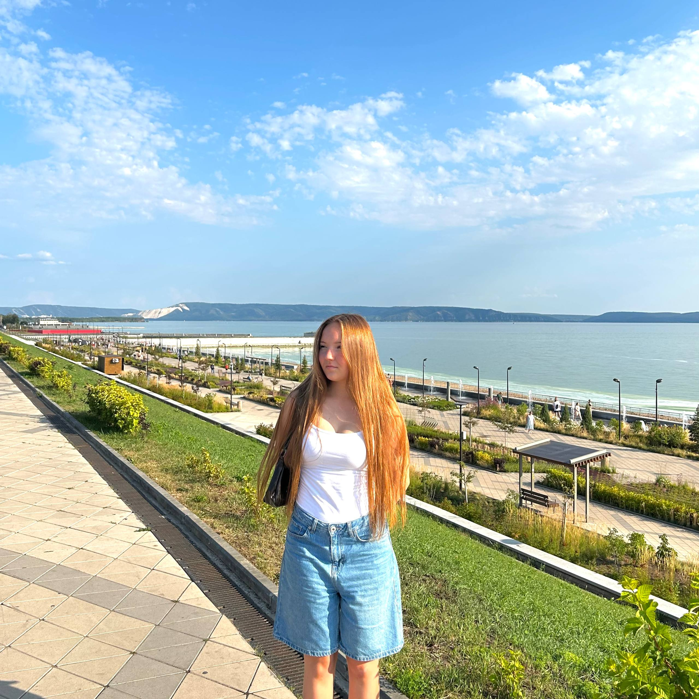
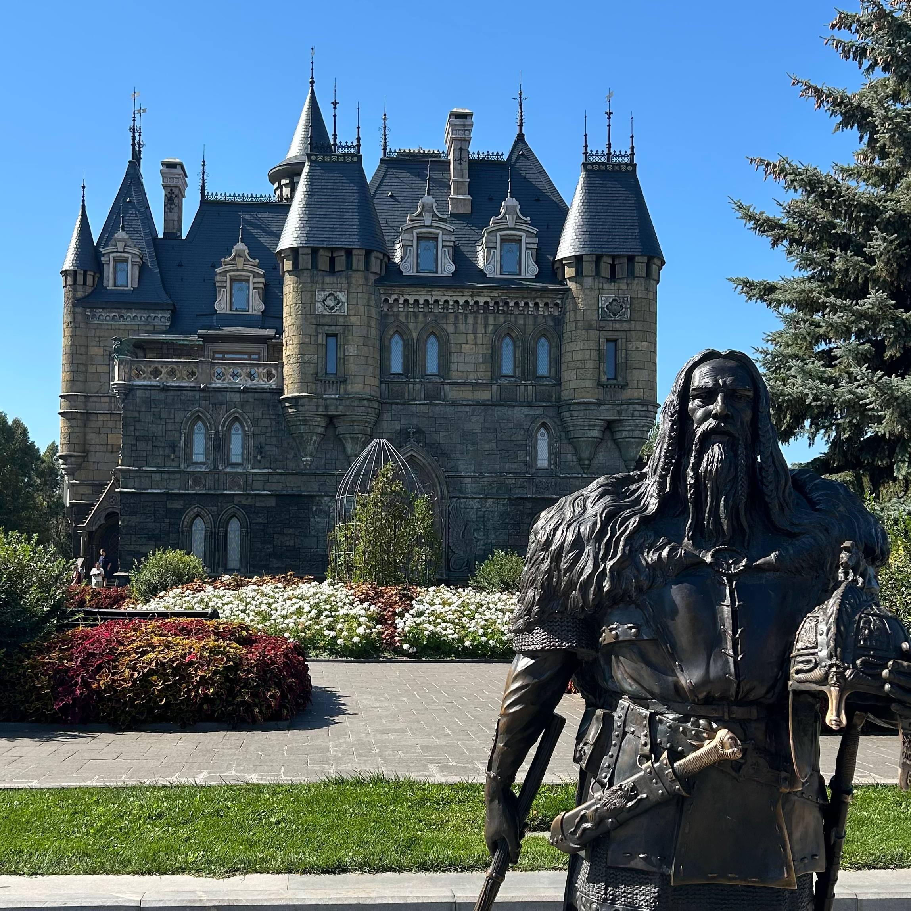
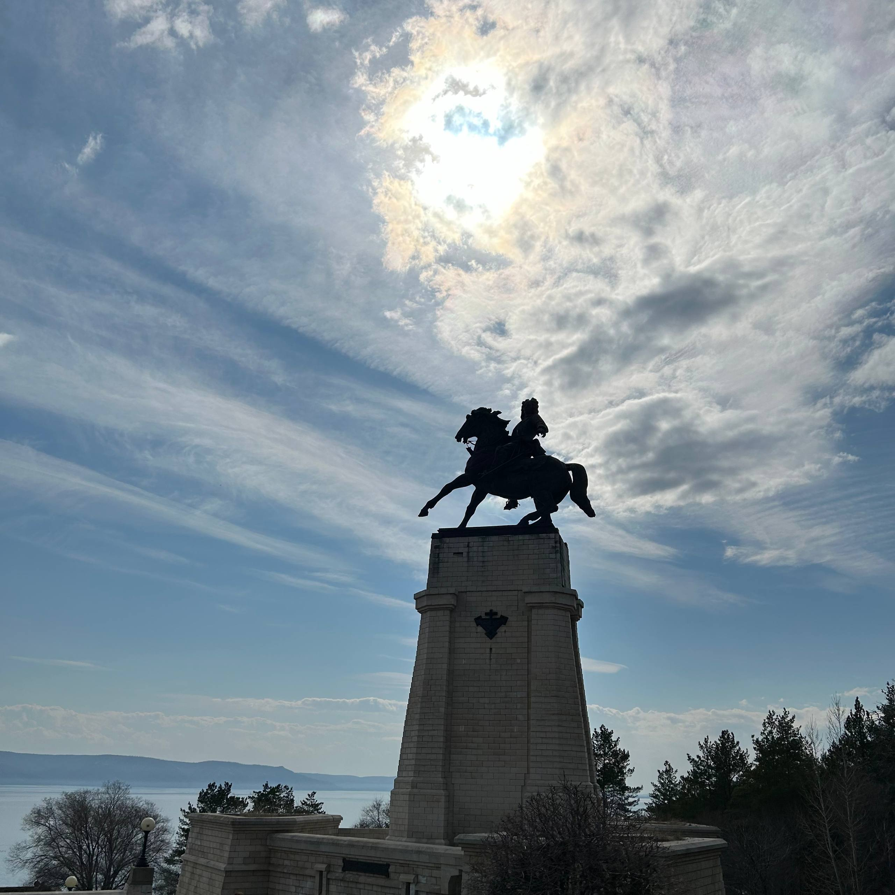
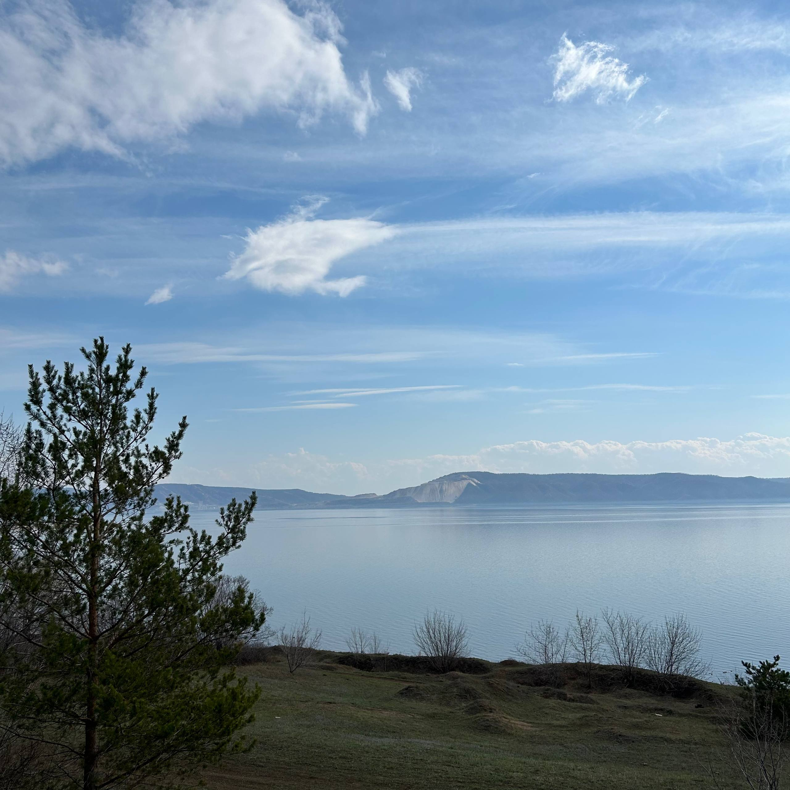

Я родилась в Тольятти. Это город из Самарской области, который раскинулся вдоль живописной Волги.
Вот некоторые фотографии с этого места:
- Фото 1 — набережная
- Фото 2 — замок Гарибальди
- Фото 3 — памятник Татищеву
- Фото 4 — природа



